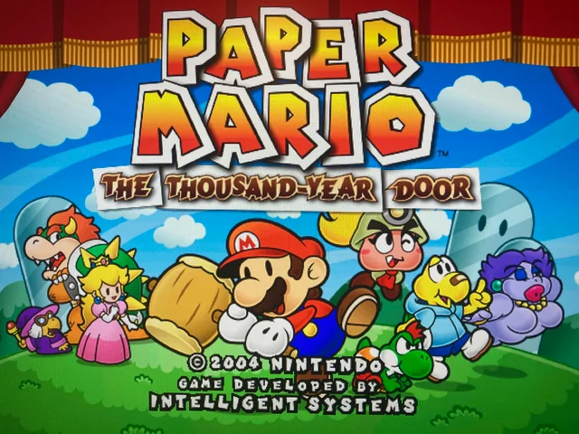
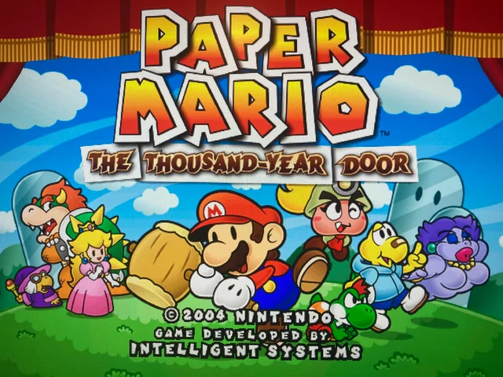
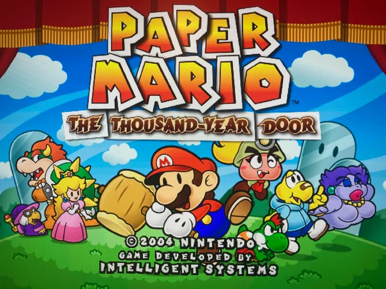
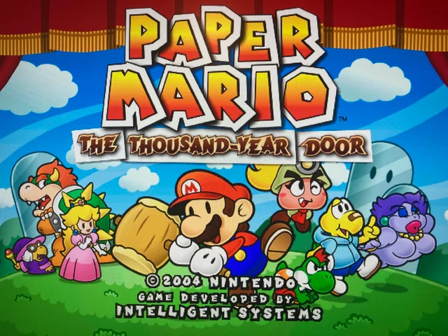
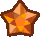
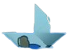
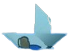

Paper Mario:
The Thousand
Year Door
| Realease Date: | Units sold: | System: |
| Jul 22, 2004 (My birthday!!) |
1.9 million | Nintento Gamecube |
|
The game opens with Princess Peach, on a royal trip, takes a stop at the not-so-inviting town of Rogueport. Rogueport is home to many criminals and lower-class individuals, which becomes apparent the second you arrive there. While there, Princess Peach gets given a mysterious treasure, and writes a letter to Mario, with a mysterious treasure map attatched. Peach invited Mario to come meet her so they can have a look at what it may mean. However, by the time Mairo arrives, the Princess is missing! It is up to Mario to slowly piece together what happened, and save Princess Peach from whoever took her. |

|
| Battle System |
|---|
|
The battle system of this game has the same root mechanics as its predecessor, while
introducing many new ones as well that freshen things up. One major difference is that
Mario's partners have their own health, and can now also be tartgeted by enemies when they
attack. This adds a new layer of strategy, alowing allies to take hits that Mario would
otherwise have to endure, and it also gives the partners a sense of impermenance in battle.
Mario's partners can also use items and badges just like Mario could in the previous game,
making partners a lot more varsatile in what they can do. |
| Overworld |
|
The overworld gameplay of Paper Mario: The Thousand Year Door is also very iterative upon
its
predecessor. Because of the upgraded power from the N64 to the Gamecube, TTYD was able to expand the worlds in which you
explore, making for much more detailed, immersive, and grand areas. There's also new
gameplay
elements on top of Mario and his partners' overworld abilities. Throughout the game, mario
gets
"cursed", providing him with traversal abilities taking
advantage of his paper
nature. Mario's curses endable him to transform into a paper airplane, a paper boat, a paper
tube, as well as fold sideways to be parallel to the camera's view. These curses add a lot
more variety to the types of puzzles you have to solve to progress, as well as opening up
the design of the areas to new possibilities.
|
| Side Content |
|
Perhaps the biggest area of gameplay that TTYD
adds onto its predecessor is the amount of side content the player gets to do. For one, in
Rogueport, there's an entire quest board, called the Trouble Center, taking the player all
across the game for them to solve all sorts of problems and get useful rewards for doing
them. This adds to the game a whole lot
moer to do, and also really fleshes out the world in which you are exploring. You can even
get an entirely optional extra party member for doing a certain quest! |
| Goombella | |
|---|---|

|
Goombella is a university graduate with a degree in archeology, and is always eager for her
next journey. Mario met her within the first minute he arrived at rogueport. Mario can use
his overworld ability to
learn more about his environment, and get hints on tough puzzles. In combat, she has the
following abilities: |
| Koops | |
|
Koops is a somewhat insecure koopa. He joins Mario so that he can gain more self-confidence
and feel stronger. Mario can use his overworld ability to
reach faraway objects and hit switches to solve puzzles. In combat, he has the
following abilities:
|
|
| Madame Flurrie | |

|
Madame Flurrie is a sophisticated, fashionista who also has a big heart. She joined Mario as
soon as she heard people were in danger. Mario can use her overworld ability to
blow away fake walls to find secret passages or solutions to puzzles. In combat, she has the
following abilities:
|
| Yoshi | |

|
Mario first met this Yoshi when he was an egg! Yoshi hatched and has been by Mario's side
every since. He's extremely energeting and always ready to fight. Mario can use his
overworld ability to
ride on him to run faster and hover over small gaps. In combat, he has the
following abilities: |
| Vivian | |

|
Is one of the three Shadow Sirens, which are a group of sisters working against Mario.
Vivian joins Mario after having enough of being picked on by her older sister Beldam. Mario
can use her overworld ability to
sink down and hide in the floor, hiding from enemies and obstacles. In combat, she has the
following abilities: |
| Admiral Bobbery | |
|
Admiral Bobbery is a tragic washed up sailor who blocked the sea from his life ever since
his wife passed away while he was on a voyage. Upon reading a missing letter containing his
wife's final words, he gained enough course to sail once again, alongside Mario. Mario can
use his overworld ability to
explode cracked walls, gaining access to new areas beyond them. In combat, he has the
following abilities: |
|
| Ms. Mowz | |
|
Ms. Mowz is a charismatic badge thief who you encounter multiple times on your adventure.
She eventually
becomes an optional party member who you can recruit by helping her with her problem posted
at the Trouble Center. Mario can use her overworld ability to
sniff out any nearby treasures or collectibles. In combat, she has the
following abilities: |
Prologue: A Rogue's Welcome |
|---|
|
The game begins with Mario arriving at Rogueport, and not one minute later seeing a fight
break out between Goombella and Lord Crump. Lord Crump's is one of the higher-ups of the
group called the X-Nauts, who are a group of high-tech, mysterious, and kinda wierd folks.
Regardless, it will later be revealed that they are the big bads of the game, and are
responsible for taking Princess Peach! After this run-in with the X-Nauts, Goombella takes
Mario to visit Professor Frankly, who's an old goomba who it well versed in history. Mario
consults him about his treasure map that Peach sent him, and Frankly tells him that it is a
legendary treasure map that guides him to the Crystal Stars, which are very magical and
powerful objects sealed away long ago. It is said that these crystal stars can be
used to
open the 1000 year door and find the fabled legendary treasure within. With that in mind,
Mario embarks on his newest advanture to find and secure the seven Crystal Stars
to reveal
the truth of the legend of The Thousand Year Door. Mario then travels into the rogueport
sewers to have
a look at The Thousand Year Door and hold his map aloft at it to get the location of the
first crystal |
|
Chapter 1: Castle and Dragon |
|
Being the first chapter of the game, it does an incredibly good job of setting the tone of
advanture and excitement. From the music to the visuals, you can tell right away that this
journey will be a special one. The first area, Petal Meadows, is similar in nature to
Pleasant Path of Paper Mario 64, very introductory and grassy, but that's not a bad thing.
This chapter serves as a great introduction into overworld and battle mechanics. Once Mario
arrives at the local town, PetalBurg, it's there he discovers that it's being terrorized by
a dragon that lives nearby. Mario takes it upon himself to help the village and defeat the
dragon. But before he does, Koops stops him and begs Mario to let him join. Mario of course
agrees, and tehy set of to the dragon, Hooktail's, Castle. Inside, numerous dry bones roam,
showing all the koopas |
|
Chapter 2: The Great Boggly Tree |
Chapter 3: Of Glitz and Glory
|
| Chapter 4: For Pigs the Bell Tolls |
| Chapter 5: The Key to Pirates |
| Chapter 6: 3 Days of Excess |
| Chapter 7: Mario Shoots the Moon |
| Chapter 8: The Thousand-Year Door |
 can really give you a run for your
money.
can really give you a run for your
money.
 


 going, or exit and
restart from
floor 1 later. There's also a very tough final boss awaiting you at floor 100, amounting to
the ultimate test after you have already endured 99 floors of pure fighting. You also get
reqarded with very useful badges every 10 floors, making the trips down feel very
fulfilling. My favourite way to tackle the pit is going another 10 floors each chapter,
allowing me to reap the rewards of the badges through my playthrough as well as go to the
floor that I believe matches the limit of my current strength.
going, or exit and
restart from
floor 1 later. There's also a very tough final boss awaiting you at floor 100, amounting to
the ultimate test after you have already endured 99 floors of pure fighting. You also get
reqarded with very useful badges every 10 floors, making the trips down feel very
fulfilling. My favourite way to tackle the pit is going another 10 floors each chapter,
allowing me to reap the rewards of the badges through my playthrough as well as go to the
floor that I believe matches the limit of my current strength.
 star.
On the way, he gets "cursed" for the first time, providing
him with the paper airplane traversal ability.
star.
On the way, he gets "cursed" for the first time, providing
him with the paper airplane traversal ability.


 who had fallen before. This castle consists of a lot of puzzles to do
with Koops' abilities, and it's a very fun one to make your way through, with many secrets
dotted about as well. Halfway through the castle, Mario received his second "curse" from the
black chest ghost, allowing him to flip sideways. At the top, Mario faces Hooktail the
dragon in a very dynamic and grand-scoped boss fight. It really signifies the step-up in
ambition and power that this game has over its predecessor. After defeating Hooktail, Mario
obtains his first crystal star.
who had fallen before. This castle consists of a lot of puzzles to do
with Koops' abilities, and it's a very fun one to make your way through, with many secrets
dotted about as well. Halfway through the castle, Mario received his second "curse" from the
black chest ghost, allowing him to flip sideways. At the top, Mario faces Hooktail the
dragon in a very dynamic and grand-scoped boss fight. It really signifies the step-up in
ambition and power that this game has over its predecessor. After defeating Hooktail, Mario
obtains his first crystal star.